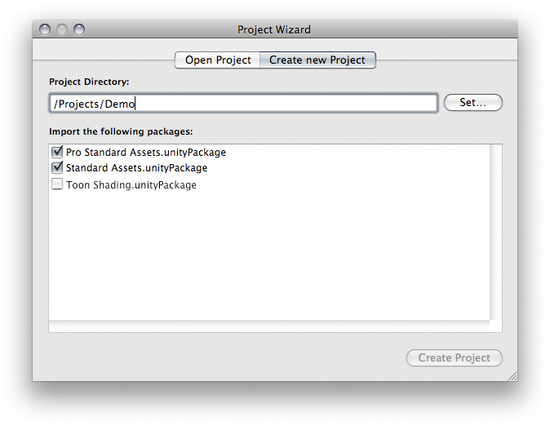

How do I install or upgrade Standard Assets?
Unity ships with Standard Assets and Pro Standard Assets.
Standard Assets contain useful things like a first person controller, some skyboxes, flares, a water plane prefab and common camera scripts.
Pro Standard Assets contain all kinds of Image Effects, like Glow, Motion Blur, Color Correction, Noise and more, as well as several advanced Water prefabs.
Installing
When creating a new project Unity automatically installs the Standard Assets and Pro Standard Assets for Unity Pro users.

The Standard Assets are included in all new Projects by default
The Standard Assets are included in all new Projects by default
Upgrading
Sometimes you might want to upgrade your Standard Assets, for example because a new version of Unity ships with new Standard Assets:
- Open your project.
- Choose from the menu.
- Select Standard Assets.unitypackage or Pro Standard Assets.unitypackage.
- A list of new or replaced assets will be presented, click .